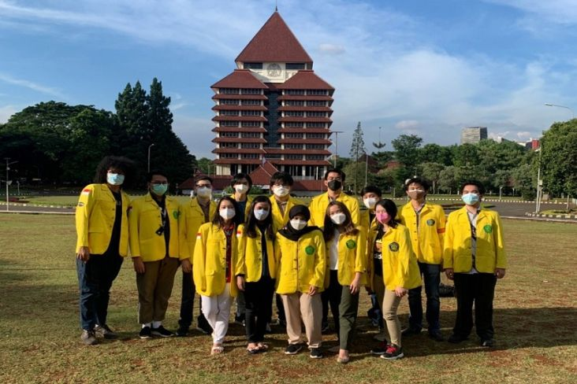

VISI
Menjadi pusat ilmu pengetahuan, teknologi, dan kebudayaan yang unggul dan berdaya saing melalui upaya mencerdaskan kehidupan bangsa serta berkontribusi bagi pembangunan Indonesia dan dunia.

MISI
Menyediakan akses pendidikan yang luas dan adil.
Menyelenggarakan Tridharma Perguruan Tinggi yang bermutu.
Menghasilkan lulusan berintelektualitas tinggi dan berdaya saing global.
Menciptakan iklim akademik yang mendukung terwujudnya visi UI.